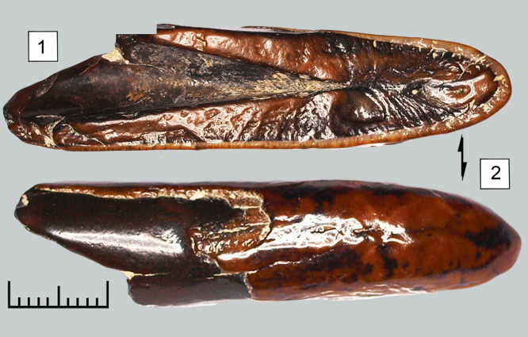

| 
Cette incisive montre tous les caractères d'une défense supérieure de Gomphotherium. S'agissant d'une défense juvenile, la couronne d'émail reste visible, ainsi que la bande d'émail latérale. Quel dommage qu'elle n'ait pas été fossilisée entière. |